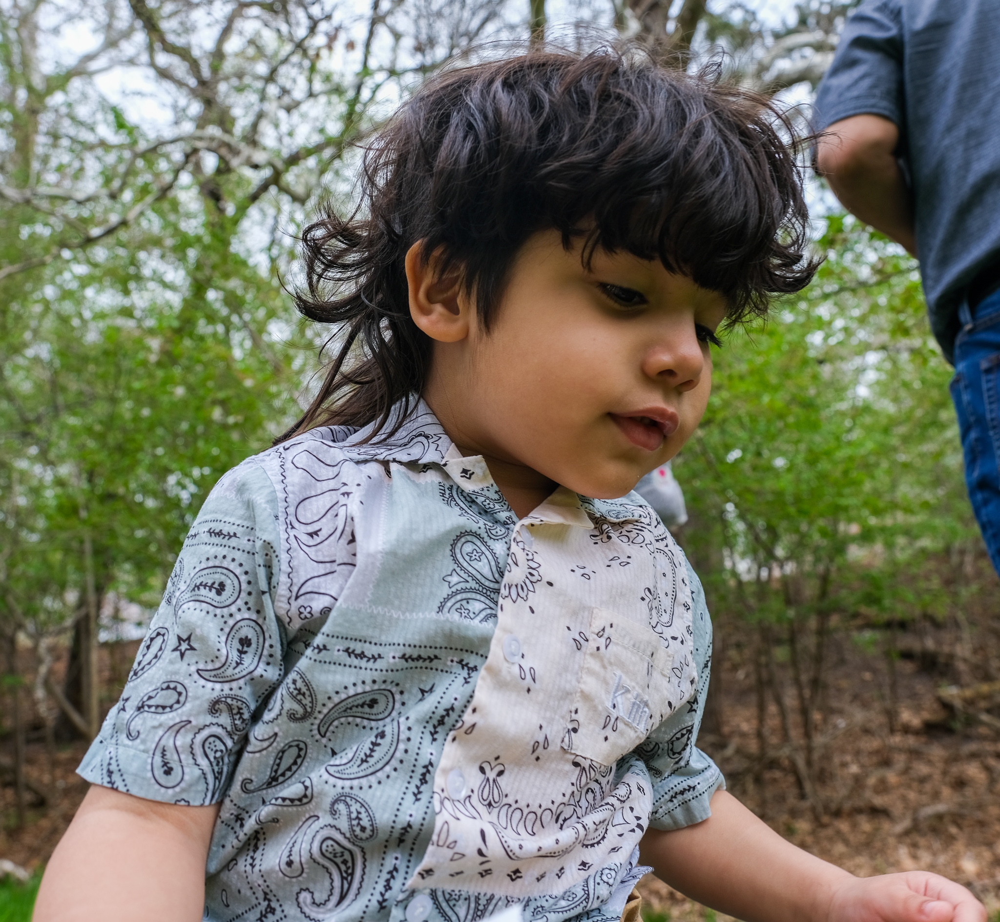

Welcome to Olivers page! Oliver is my son. He is a non verbal 4 year old with mild-moderate autism. He was diagnosed when he was one and a half years old. His favorite things are playing in water, going outside for walks, pizza, fruits, flapping his hands, jumping, and spinning. Im making this page becuase I dont think autism is spoken on enough or normalized yet. I belive we should respect & try to understand everyones diffrences, including people on the spectrum. This page is also for the parents/caregivers of people with autism. Youre not alone, your feelings matter and this is a safe space for you as well. Stay and stim with us a while!
Autism, or autism spectrum disorder (ASD), refers to a broad range of conditions characterized by challenges with social skills, repetitive behaviors, speech and nonverbal communication. According to the Centers for Disease Control, autism affects an estimated 1 in 44 children in the United States today.
DONATE Autism Society